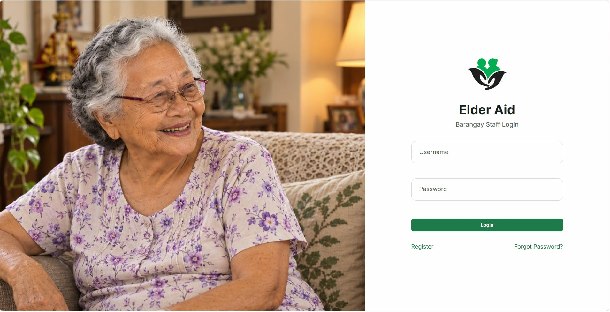
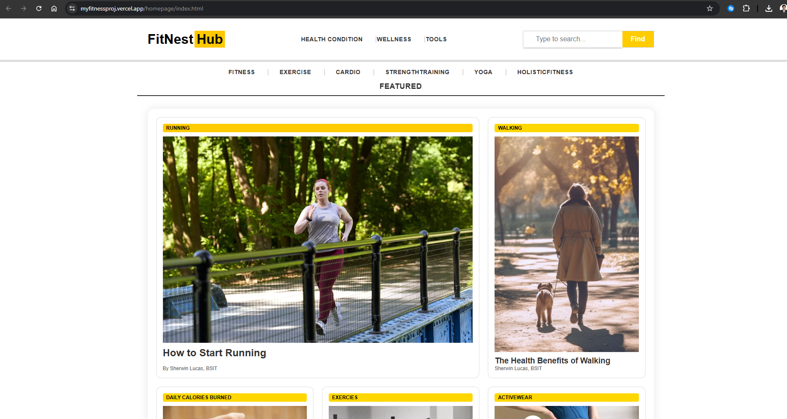

Hardware
- PC Assembly and Disassembly
- Computer Troubleshooting
- Hardware Installation and Replacement
Malolos, Bulacan, Philippines
Aspiring IT Support & Network Support Specialist
Fourth-year Bachelor of Science in Information Technology student at the College of Our Lady of Mercy. I have foundational, hands-on knowledge in computer troubleshooting, PC assembly and disassembly, operating system installation, wireless networking, and antivirus management — and I am looking for an IT Support or Network Support opportunity where I can contribute and keep growing.
About Me
A short look at where I am in my studies, what I enjoy working on, and where I want to go next.
I am currently a fourth-year Bachelor of Science in Information Technology student at the College of Our Lady of Mercy (COLM). Before college, I completed the Information and Communications Technology strand in senior high school at Richwell College Inc., which is where my interest in computers and networking first took hold.
I am working toward a career in technical support — the kind of work where you are the person a colleague turns to when a device or a connection stops behaving. I have a foundation in operating system installation and configuration, driver and software setup, and antivirus management, plus wireless network configuration and basic networking concepts. I want to build on that in a real support environment, handling tickets, working with users, and learning how an organization's systems fit together.
What draws me to IT is that the work is practical and measurable — a machine that would not boot now boots, a network that would not connect now connects, a user who was stuck is no longer stuck. I am comfortable working inside a case: PC assembly and disassembly, hardware installation and replacement, and methodical troubleshooting that narrows down a fault instead of guessing at it.
I like problems I can reproduce, diagnose step by step, and fix. That habit — isolate the fault, test the simplest cause first, document what worked — is the part of IT support I find most satisfying, and the skill I most want to sharpen under experienced colleagues.
I am seeking an IT Support or Network Support role — internship or entry level — where I can apply what I have learned, improve my practical skills, and contribute reliably to an organization's technical support and networking operations.
Technical Skills
Skills grouped by area, based on my coursework and hands-on practice.
Education
From elementary school through to my current degree program.
Bachelor of Science in Information Technology
Fourth-year student. Coursework covering hardware, operating systems, networking, cybersecurity fundamentals, and web development basics.
Senior High School – Information and Communications Technology
ICT strand. First formal exposure to computer hardware, troubleshooting, and network fundamentals.
Junior High School
Elementary Education
Projects
My capstone project and more.

A web-based assistance management and monitoring system designed for Barangay Tinejero, Pulilan, Bulacan. The system focuses on organizing senior citizen records and assistance-related information for authorized barangay personnel.

A desktop-based Gym Membership Management System developed to simplify gym operations. It helps manage member records, membership plans, and gym transactions through an organized and user-friendly interface.

A fitness website designed to provide users with accessible fitness information, workout guides, and health-related content. It features a clean and responsive layout for an engaging browsing experience.
Resume
Preview my CV below, or download a copy for internship and employment applications.
Contact
Open to internship and entry-level opportunities in IT support and networking.
You can contact me using any of the following platforms.
Available for messages at any hour — I usually reply within a day.
Fill out the form below to prepare an email message for me.